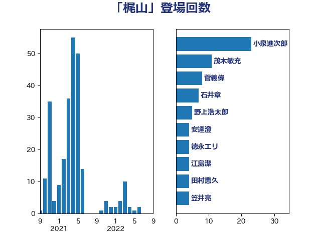

単語「梶山」

| 小泉進次郎 | 自由民主党 | 23 回 |
| 茂木敏充 | 自由民主党 | 11 回 |
| 菅義偉 | 自由民主党 | 8 回 |
| 石井章 | 日本維新の会 | 7 回 |
| 野上浩太郎 | 自由民主党 | 5 回 |
| 安達澄 | 無所属 | 4 回 |
| 徳永エリ | 立憲民主党 | 4 回 |
| 江島潔 | 自由民主党 | 4 回 |
| 田村憲久 | 自由民主党 | 4 回 |
| 笠井亮 | 日本共産党 | 4 回 |
| 細田博之 | 自由民主党 | 4 回 |
| 小熊慎司 | 立憲民主党 | 3 回 |
| 梅村みずほ | 日本維新の会 | 3 回 |
| 浅野哲 | 国民民主党 | 3 回 |
| 礒崎哲史 | 国民民主党 | 3 回 |
| 金田勝年 | 自由民主党 | 3 回 |
| 青山繁晴 | 自由民主党 | 3 回 |
| 下村博文 | 自由民主党 | 2 回 |
| 勝部賢志 | 立憲民主党 | 2 回 |
| 古賀之士 | 立憲民主党 | 2 回 |
| 宮本岳志 | 日本共産党 | 2 回 |
| 小沢雅仁 | 立憲民主党 | 2 回 |
| 山下芳生 | 日本共産党 | 2 回 |
| 山口俊一 | 自由民主党 | 2 回 |
| 山東昭子 | 自由民主党 | 2 回 |
| 岩渕友 | 日本共産党 | 2 回 |
| 平木大作 | 公明党 | 2 回 |
| 本田顕子 | 自由民主党 | 2 回 |
| 浅田均 | 日本維新の会 | 2 回 |
| 田村貴昭 | 日本共産党 | 2 回 |
| 萩生田光一 | 自由民主党 | 2 回 |
| 落合貴之 | 立憲民主党 | 2 回 |
| 野村哲郎 | 自由民主党 | 2 回 |
| 金子恵美 | 立憲民主党 | 2 回 |
| 高木毅 | 自由民主党 | 2 回 |
| 麻生太郎 | 自由民主党 | 2 回 |
| ながえ孝子 | 無所属 | 1 回 |
| 三浦信祐 | 公明党 | 1 回 |
| 上野通子 | 自由民主党 | 1 回 |
| 佐藤啓 | 自由民主党 | 1 回 |
| 古賀友一郎 | 自由民主党 | 1 回 |
| 和田義明 | 自由民主党 | 1 回 |
| 大家敏志 | 自由民主党 | 1 回 |
| 小沼巧 | 立憲民主党 | 1 回 |
| 小渕優子 | 自由民主党 | 1 回 |
| 小西洋之 | 立憲民主党 | 1 回 |
| 山本順三 | 自由民主党 | 1 回 |
| 山添拓 | 日本共産党 | 1 回 |
| 山谷えり子 | 自由民主党 | 1 回 |
| 山際大志郎 | 自由民主党 | 1 回 |
| 岡田克也 | 立憲民主党 | 1 回 |
| 工藤彰三 | 自由民主党 | 1 回 |
| 平井卓也 | 自由民主党 | 1 回 |
| 東徹 | 日本維新の会 | 1 回 |
| 江田憲司 | 立憲民主党 | 1 回 |
| 浦野靖人 | 日本維新の会 | 1 回 |
| 海江田万里 | 立憲民主党 | 1 回 |
| 源馬謙太郎 | 立憲民主党 | 1 回 |
| 片山大介 | 日本維新の会 | 1 回 |
| 磯崎仁彦 | 自由民主党 | 1 回 |
| 福岡資麿 | 自由民主党 | 1 回 |
| 福田昭夫 | 立憲民主党 | 1 回 |
| 秋本真利 | 自由民主党 | 1 回 |
| 竹内真二 | 公明党 | 1 回 |
| 紙智子 | 日本共産党 | 1 回 |
| 美延映夫 | 日本維新の会 | 1 回 |
| 義家弘介 | 自由民主党 | 1 回 |
| 菊田真紀子 | 立憲民主党 | 1 回 |
| 辻元清美 | 立憲民主党 | 1 回 |
| 馬淵澄夫 | 立憲民主党 | 1 回 |
| 高野光二郎 | 自由民主党 | 1 回 |